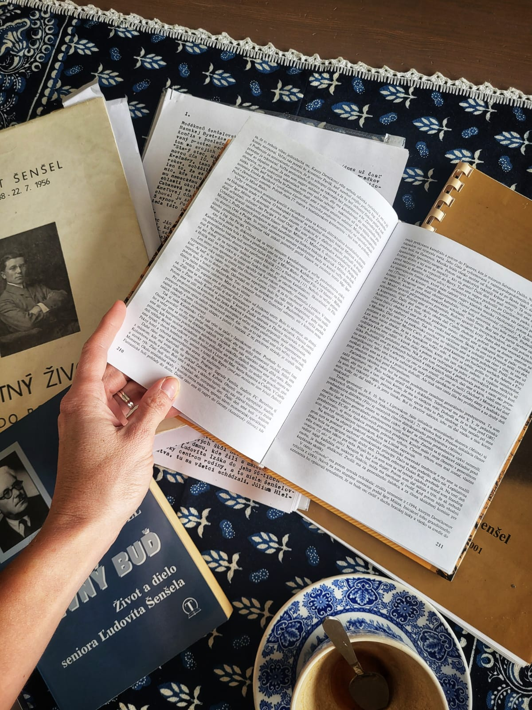
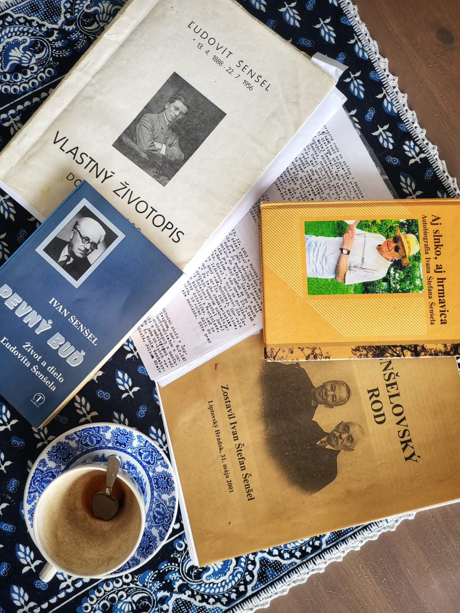

Príbeh · O autorke
za slobodna Šenšelová · Annina praneter · tvorca tejto stránky
K objavovaniu príbehu mojej pratety Anny Šenšelovej ma priviedla zvedavosť a objav dvoch igelitiek starých výšiviek v pivnici po starých rodičoch. Keďže výšivaniu som sa dlho venovala (modernej výšivke, nie tradičným folklórnym vzorom), držať v rukách tieto precízne spracované kúsky histórie vo mne vzbudilo neskutočný obdiv k našim predkom a ženám, ktorých ruky dokázali niečo takéto vytvoriť.
Nikdy som sa o folklór alebo ľudové odievanie veľmi nezaujímala, ale toto bol presne ten moment, kedy sa to zmenilo. Hneď som si spomenula na autobiografiu môjho starého otca – musím s hanbou priznať, nikdy predtým nedočítanú. Teraz to vnímam tak, že som na ňu musela jednoducho dozrieť. Príbeh o jeho živote sa mi teraz čítal úplne inak, hltala som ho viac než akýkoľvek bestseller.
Na toľkých zážitkoch som sa zasmiala, úplne som si ho vedela predstaviť, ako vystrájal všetky možné beťárčiny – a to ako malý chlapec, ale aj ako dospelý a seriózny muž. Najviac ma zaujalo, že sa nehanbil v knihe pomenovať a opísať aj svoje chyby. Táto brutálna úprimnosť mi dodala akýsi pocit slobody – že sa nemusíme vždy tváriť, že sme dokonalí.
Táto brutálna úprimnosť mi dodala akýsi pocit slobody – že sa nemusíme vždy tváriť, že sme dokonalí.
Prostredníctvom autobiografie starého otca, životopisu seniora Ľudovíta Šenšela a publikácie „Šenšelovský rod" som sa preniesla sto a viac rokov dozadu a detailne spoznala svojich predkov. V hlave mi však stále ostávali výšivky. Chcela som vyriešiť záhadu, odkiaľ sa vlastne vzali v pivnici u starých rodičov a čo sú zač.

Pani Zuzka ma odkázala aj na pána Stanka Talapku – a keď som sa s ním spojila, až som nemohla uveriť jeho ochote pomôcť. Pozval ma priamo do Martina, kde viedla stopa tety Anny. Sadla som teda na vlak a vyrazila. Pán Talapka mi porozprával detaily ku jednotlivým výšivkám, odhadol ich pôvod a využitie, povedal mi o spolku Lipa a dokonca priniesol ukázať košeľu z ich dielne. S ocinom sme si pozreli aj nádhernú výstavu Karola Plicku a stálu expozíciu krojov v SNM.
Tak ako sa nám niektoré veci v živote v prvom momente zdajú katastrofálne, s odstupom času vidím, že je to niekedy najlepšie, čo sa nám mohlo stať. Na jeseň 2025 mi zrušili pracovnú pozíciu v korporácii a ako matka troch detí som si ťažko hľadala prácu. S každým ďalším odmietnutím moja sebahodnota akosi klesala. Aj vďaka nezamestnanosti som však mala priestor venovať sa skúmaniu rodinnej histórie aj príbehu Lipy.
Nakoniec som si povedala, že musím vziať osud do vlastných rúk, a začala som sa venovať samoštúdiu webdizajnu pomocou AI. Videla som v tom ideálnu príležitosť zhmotniť všetky informácie, ktoré som nadobudla počas môjho pátrania, a zároveň testovať moje nové zručnosti. Takto sa aspoň malým kúskom pričiním o to, aby sa na prácu našich predkov nezabudlo.
Keď som si dala za cieľ vytvoriť túto stránku, moja detektívna činnosť ešte nabrala na obrátkach. Vo svojich 38 rokoch som sa spoznala s mojím dvojstupňovým ujom Jánom Jurášom – veľmi rozhľadeným a zanieteným človekom, pomocníkom od prvého stretnutia. Spojila som sa aj s pani Olgou Kapustovou, mojou sesternicou z tretieho kolena, a dúfam, že tu ešte nekončíme.
Verím, že poznanie vlastnej minulosti je absolútne obohacujúci zážitok — je to ako chýbajúci dielik puzzle v našom vnútri, pretože každá generácia pred nami do nás všepila niečo, čo tá ďalšia zachovala. A tak sme prepojení jednou niťou, ani o tom na prvý pohľad nevieme.

Som kreatívna duša. Po štúdiu marketingu na vysokej škole som dva roky žila s manželom v Škótsku, v romantickej chalúpke na samote, kde sa nám narodila naša prvá dcéra Amelia. Keď mala tri mesiace, presťahovali sme sa na Slovensko — najprv do Liptova, potom do Bratislavy, chvíľu späť do Liptova, kde sa nám narodil Teo, až sme nakoniec pred dvanástimi rokmi zakotvili v Senci. Pred troma rokmi sa nám tu narodila druhá dcéra Charlotte.
Okrem umeleckých koníčkov sa rada venujem záhrade, pečeniu a našim dvom psom. A keď mi zostane čas, milujem si vyčistiť hlavu behom.
V tvorbe nikdy neostanem len pri jednej technike. Celý život sa u mňa striedajú obdobia extrémneho nadšenia pre nové nápady. Umenie bolo odjakživa mojou vášňou — a dnes už viem, že je to preto, lebo to mám v krvi.
Vytvorila som interaktívnu mapu výšiviek, aby som sa pokúsila aspoň maličko nadviazať na odkaz Anny Šenšelovej a zmapovať krásu slovenských tradičných vzorov.
Ak vlastníte podobné poklady ako ja, budem rada, keď na mapu umiestnite svoj pin a pridáte fotky vášho dedičstva.
Zobraziť mapu výšiviek„Keď vieš, odkiaľ pochádzaš, zistíš, kam môžeš ísť."— Anna Lockwoodová